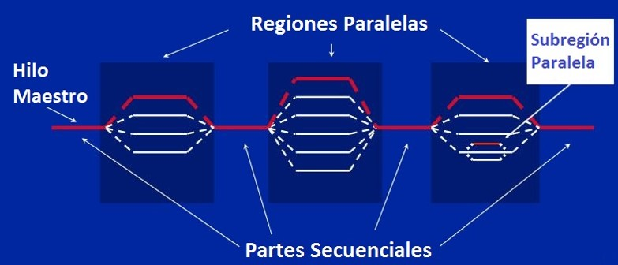

Modelo
Cuando se tiene una tarea muy pesada, esta puede ser dividida en tareas independientes más sencillas (fork) que cuando cada una tiene una solución a la tarea, se combinan (join) para poder tener la solución general a la tarea principal.
En OpenMP cuando se inicia un programa se crea un hilo maestro o padre que cuando necesita ingresar a una región paralela crea los hilos necesarios para poder realizar la tarea. Después de que cada hilo termine de realizar sus tareas, se presenta una sincronización y se sigue con la ejecución del programa. Puede que alguno de los hilos que se crearon necesite hacer este mismo procedimiento lo cual se puede realizar sin ningún problema.
Directivas
Sintaxis
Para C/C++ la sintaxis básica de OpenMP es la siguiente:
#pragma omp directiva[cláusulas]Donde las directivas son las acciones que se van a realizar y las cláusulas son las condiciones que se presentan a estas directivas. La directiva que más se utiliza es parallel ya que es la que permite que se de la creación de los hilos y su sintaxis es la siguiente:
#pragma omp parallel {
<BLOQUE DE CÓDIGO>
}
Funciones útiles
omp_set_num_threads(n): Permite fijar el número máximo de hilos que usará el programa.
omp_get_num_threads(): Retorna el número de hilos que están en ejecución en el momento de su llamada.
omp_get_thread_num(): Retorna el identificador del hilo. Este valor es un número entero entre 0 y n-1, donde n es el número de hilos que usará el programa.
omp_get_max_threads(): Retorna el número máximo de hilos que usará el programa.
omp_get_num_procs(): Retorna el número de núcleos o de procesadores del computador.
Técnica SPMD
SPMD(Single Program, multiple data) es un técnica que permite lograr el paralelismo, donde las tareas son separadas y ejecutadas simultáneamente en múltiples procesadores y con diferentes entradas.
Uso compartido falso
Se presenta cuando existen datos independientes que se encuentran en la misma línea de caché, pero que por encontrarse de esta manera, si se realiza alguna actalización a la variable, las demás van a quedar sin poder realizar ningún procedimiento.
Sincronización
Se presenta cuando existe dependencia de datos entre procesadores. Para OpenMP existen tres directivas que ayudan a que se realice una sincronización:
Barrera: Es un método que crea una barrera donde los hilos tienen que esperar a que todos se encuentren en esta sección para poder continuar.
#pragma omp barrierExclusión mutua: Se presenta cuando solo se necesita que un hilo ejecute el bloque de código.
#pragma omp criticalAtomic: Proporciona exclusión mutua y se utiliza cuando se da una actualización de una sola ubicación de memoria. Solo puede ser actualizada por un solo simultáneamente y es utilizada por los operadores de aumenteo y decremento.
#pragma omp atomicDirectiva Task
Las tareas en OpenMP son bloques de código que el compilador envuelve y pone a disposición para ejecutarse en paralelo.
#pragma omp parallel {
#pragma omp task
printf("hello world from a random thread\n");
}Directiva TaskWait
Puede sincronizar tareas utilizando las directivas taskwait o taskgroup. Cuando un subproceso encuentra una construcción taskwait, la tarea actual se suspende hasta que todas las tareas secundarias que generó antes de que la tarea taskwait finalice la ejecución.
#pragma omp parallel {
#pragma omp taskwait
}Cláusulas de Planificación
Indica la forma como se dividen las iteraciones de los bucles entre los hilos. Pueden ser:
schedule( static[ ,tamaño] ): Las iteraciones se dividen según el tamaño, y nosotros decidimos como van se van a asignar las iteraciones de los hilos.
schedule( dinamic[ ,tamaño] ): Las iteraciones se dividen según el tamaño y se asignan a los hilos dinámicamente cuando van acabando su trabajo, es decir que se deja que OpenMP maneje la forma como se van a hacer las iteraciones de los hilos.
Ciclo For
Para manejar regiones paralelas en un ciclo for se utiliza la directiva for que es una optimización de la directiva parallel para el manejo de ciclos. Si solo se encuentra el ciclo for dentro de una región de parallel, la sintaxis es la siguiente:
#pragma omp parallel for
for( <INICIALIZACIÓN> ; <CONDICIÓN DE PARADA> ; <ACTUALIZACIÓN> ){
<BLOQUE DE CÓDIGO>
}De modo contrario, si el ciclo for no es el único código dentro de la región paralela, la sintaxis que se usa es la siguiente:
#pragma omp for
for( <INICIALIZACIÓN> ; <CONDICIÓN DE PARADA> ; <ACTUALIZACIÓN> ){
<BLOQUE DE CÓDIGO>
}Cláusula Reduction
Se refiere a una variable acumuladora donde se crea una copia local dentro de cada hilo de la variable establecida, y que cuando todos los hilos ya han hecho su trabajo, con estas copias locales se va a actualizar la variable global. La variable se va a inicializar con la identidad del operador que establecimos, por ejemplo si el operador es suma (+), la variable será inicializada con cero (0). Su formato es el siguiente:
reduction(operador : variable)Otras directivas
master: Esta directiva se presenta cuando se necesita que un segmento de código sea ejecutado solo por el hilo maestro, es decir que los demás hilos van a omitir este bloque de código. Su sintaxis es la siguiente:
#pragma omp master{
<BLOQUE DE CÓDIGO>
}single: Es una directiva muy utilizada e indica el bloque de código que solo puede ser ejecutado por un hilo, el hilo que llegue primero será el que va a trabajar ese bloque de código y los demás hilos lo van a omitir.
#pragma omp single{
<BLOQUE DE CÓDIGO>
}sections: Esta directiva brinda una sección de bloque de código a cada hilo y su formato es el siguiente:
#pragma omp sections{
#pragma omp section {
<BLOQUE DE CÓDIGO SECCIÓN 1>
}
#pragma omp section {
<BLOQUE DE CÓDIGO SECCIÓN N>
}
}